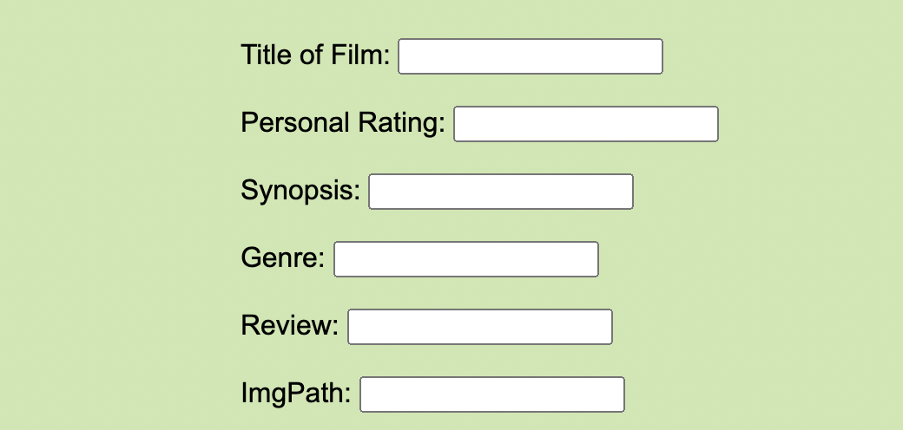
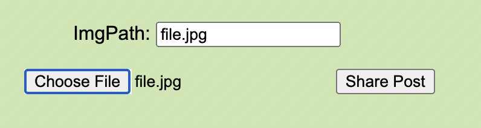

To successfully create a new post, you MUST fill out every single box. You will have to include the title of the film, the rating you would give it as a viewer, a synopsis, genre, your personal reviewm and the image path of a photo (Ex: ./folder/image.jpg).
In order for this post feature to work, you will not only have to type in the image path, but ALSO choose the file from your computer. You MUST do both of these things in order for the site to work properly. After uploading your photo, you can click the Share Button and you will be redirected home to see your post live!
